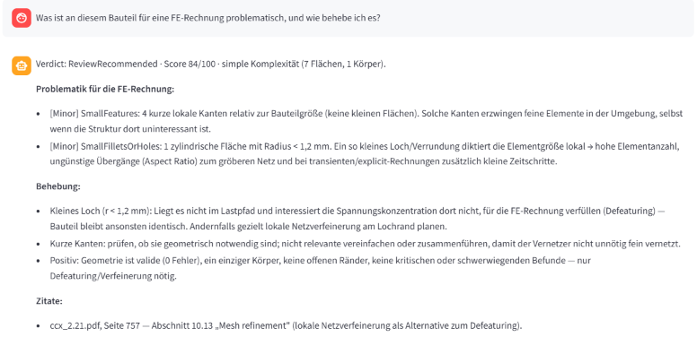
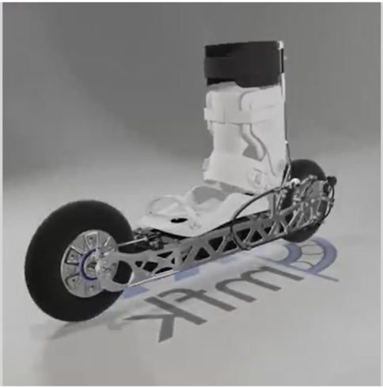
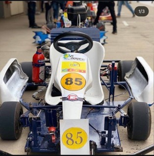

Über mich
Woher ich komme
Aus dem Maschinenbau. Im Bachelor in Indien habe ich im Team den Rahmen eines Go-Karts konstruiert. Danach war ich zwei Jahre bei Tata Consultancy Services und habe Software für einen Kunden in acht Ländern eingeführt.
2022 bin ich für den Master nach Erlangen gekommen, im August 2026 habe ich ihn abgeschlossen. Heute wohne ich in Reutlingen.
Was ich baue
Werkzeuge, die Simulationsingenieuren Routinearbeit abnehmen. Mein größtes Projekt ist SimReady: Es prüft ein CAD-Bauteil, bevor es in die FEM-Rechnung geht, und zeigt, wo das Netz feiner werden muss. Am Lehrstuhl KTmfk habe ich ein Werkzeug gebaut, das NX-Baugruppen automatisch in Simscape-Modelle überträgt.
Was ich gerade lerne
Deutsch: Ich lerne gerade für B2 und übe das Sprechen mit einem Gesprächspartner, den ich mir selbst gebaut habe.
Und wie man KI-Systeme für lokale Betriebe baut. Das erste ist ein Telefonassistent, der Anrufe auf Deutsch annimmt.
Projekte und Erfahrung
Alle Projekte
SimReady: KI-Copilot für FEA-Vorverarbeitung
91 % F1 auf 3.612 Flächen · 88/100 CAD-Modelle aus Bildern

Grenzflächenparameter per PINN bestimmen
Fehler unter 5 % in 33 von 36 Konfigurationen

NX-Baugruppe zum Simscape-Modell
Aus Stunden manueller Übertragung werden Minuten
Fragen an meinen Lebenslauf
Chat-Assistent mit Quellenbindung, live ausprobieren

Rahmen und Lenkgeometrie eines Go-Karts
Platz 11 von über 250 Teams
KI-Telefonassistent für lokale Unternehmen
Dienste nach Antwortzeit und Sprachqualität gewählt
Ausbildung
- Master Computational Engineering
- Bachelor Maschinenbau
Berufserfahrung
- KI-Entwicklung und Automatisierung · Freiberuflich
- Wissenschaftliche Hilfskraft und Tutor
- Konstruktionstechnik (KTmfk)
- Technische Dynamik, Tutor
- Fertigungstechnologie
- BRAINIACS, Kontinuumsmechanik
- Automatisierungsingenieur, Tata Consultancy Services
Kenntnisse
PyTorch, PyTorch Geometric, TensorFlow, Transformer, scikit-learn
PINN, Graph Neural Networks, LLM-Fine-Tuning, inverse Parameteridentifikation
FEM, Kontinuumsmechanik, Mehrkörpersimulation, Simufact Forming, Simscape, ParaView
Siemens NX, NXOpen API, PTC Creo, STEP, pythonocc
Python, C++ (deal.II), MATLAB, Fortran, Git
Deutsch B2 · Englisch C1 · Hindi fließend · Telugu Muttersprache